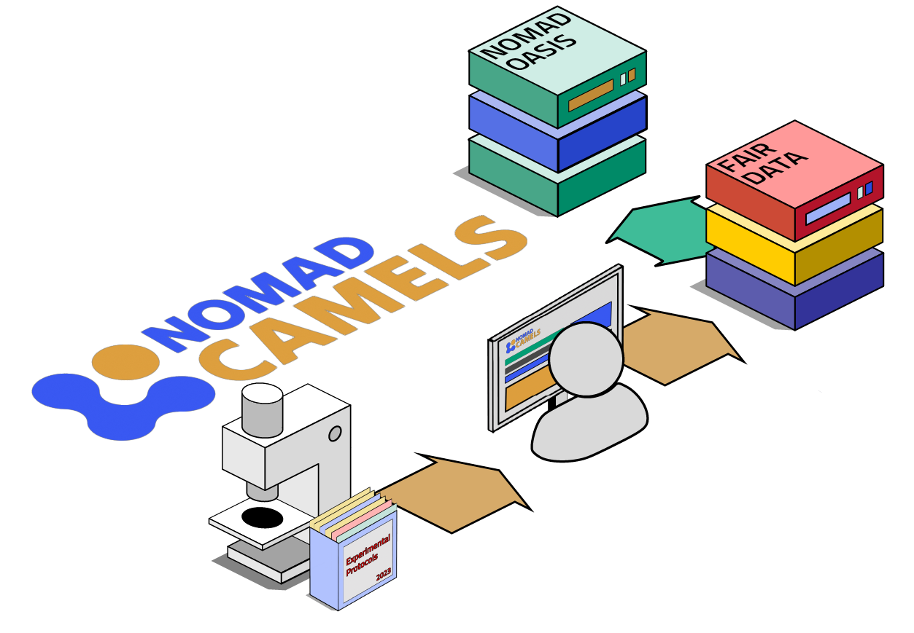
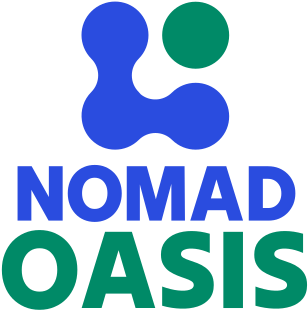
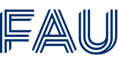

record FAIR data.

CAMELS is a Python package distributed via PyPI. It installs easily on any computer, and on Windows the installer does all the work for you.
No programming skills required. Configure your measurement and process protocols, and get it done within minutes.
Automatically store FAIR data with rich metadata so you and others can understand your experiment in detail. Optionally connect directly to your NOMAD Oasis.
Add further instruments to your setup at will. Reuse and adapt existing measurements quickly.
Work with small setups using directly connected instruments, or connect to large distributed systems using advanced protocols like EPICS.
Contribute to CAMELS and add new instruments on GitHub. CAMELS comes with an instrument driver wizard that helps you implement new instruments.
Define your measurement and process protocols with a few clicks.
- Easily add and remove instruments
- Design measurement and process protocols
- Run experiments
- Automatically get comprehensive documentation
Let CAMELS take care of instrument communication.
- Community-developed instrument drivers
- Local communication via any interface
- Connect existing infrastructure via EPICS
- Build your own drivers with built-in assistants
Let CAMELS automatically store all available data and metadata.
- Measurement data and timestamps
- Instruments and settings
- Human-readable summary
- Python code that runs the protocol
Use your own resources, your own rules, your own extensions. Manage all your group's data.

Learn about Oasis →CAMELS requires a desktop computer running Windows, Linux/UNIX, or macOS. The required Python environment is installed either through the installer on Windows or manually via the installation guide.
Once installed, CAMELS lets you install instrument drivers from PyPI via the graphical user interface. You can also create and run local self-developed instrument drivers.
Developed at the Friedrich-Alexander-Universitat Erlangen-Nurnberg with FAIR data practices and open-source approach in mind.

A permissive license so that you can use CAMELS everywhere and for all purposes.
Openly discuss issues and opportunities and help shape future CAMELS development on GitHub.
Develop and share new instrument drivers or contribute bugfixes, features and extensions through standard open-source workflows on GitHub.